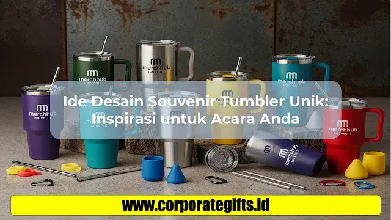

Corporate Gifts ID - Souvenir tumbler unik adalah botol minum fungsional yang dirancang khusus dengan perpaduan warna, tipografi, motif grafis, maupun logo instansi yang diselaraskan dengan tema acara. Cinderamata ini tidak hanya berfungsi sebagai wadah minum harian yang ramah lingkungan, tetapi juga bertindak sebagai media branding jangka panjang dan kenang-kenangan personal yang bernilai tinggi.
Poin Kunci Desain Souvenir Tumbler:
- Nilai Persepsi Tinggi: Kustomisasi visual yang rapi mengubah tumbler biasa menjadi hadiah premium yang sangat dihargai penerima.
- Branding Berkelanjutan: Dipakai berulang kali di kantor, gym, atau seminar, menghasilkan ribuan impresi merek tanpa biaya iklan tambahan.
- Sentuhan Personalisasi Nama: Grafir laser nama individual membuat penerima merasa diakui dan terikat secara emosional.
- Kemasan Eksklusif: Penyajian menggunakan box custom atau kantong kanvas serut meningkatkan daya tarik visual saat unboxing.
Apa Itu Souvenir Tumbler Unik?
Souvenir tumbler unik merupakan inovasi cinderamata modern yang memadukan kepraktisan botol minum portabel dengan sentuhan estetika visual khusus. Berbeda dari botol polos standar pabrik, tumbler custom ini diberi elemen personalisasi berupa grafir nama, tipografi kutipan inspiratif, siluet lanskap, maupun logo korporat.
Souvenir jenis ini sangat populer diaplikasikan pada berbagai skala acara, mulai dari resepsi pernikahan elegan, perayaan ulang tahun, wisuda kelulusan, hingga pengadaan souvenir kantor dan seminar kit instansi.
Mengapa Desain Unik Sangat Krusial?
Desain yang dirancang dengan matang membuat souvenir tumbler lebih menonjol, mudah diingat, dan memiliki probabilitas tinggi untuk terus digunakan dalam rutinitas harian penerima:
- Meningkatkan Nilai Persepsi (Perceived Value): Desain yang elegan memberi kesan eksklusif dan bernilai jauh lebih tinggi daripada biaya produksinya.
- Memperkuat Brand Recall: Perpaduan palet warna brand yang harmonis dengan logo yang dicetak presisi memperkuat identitas korporasi setiap kali tumbler diletakkan di meja kerja.
- Fungsionalitas Harian: Botol minum berkualitas tinggi selalu dibawa beraktivitas, memastikan media promosi Anda aktif bergerak di ruang publik.
- Kesan Personal Mendalam: Penambahan nama tamu atau inisial menciptakan hubungan emosional yang erat antara penyelenggara dan tamu undangan.
5 Ide Desain Tumbler Kreatif Berdasarkan Tema Acara
Berikut beberapa konsep visual yang dapat Anda terapkan pada tumbler vacuum insulated sesuai karakteristik acara:
1. Tema Minimalis Monokrom & Inisial
Mengutamakan palet warna matte (hitam doff, abu-abu arang, atau putih gading) dengan grafir tipografi inisial nama yang simpel. Konsep ini sangat ideal untuk corporate gift eksekutif, welcome kit karyawan baru, dan resepsi pernikahan modern.
2. Tema Floral & Botanical Nature
Ilustrasi garis halus daun eucalyptus, bunga liar, atau motif dedaunan tropis dengan warna pastel lembut. Sangat cocok untuk acara bridal shower, perayaan hari ibu, maupun kampanye peduli lingkungan.
3. Tema Kartun & Karakter Ceria
Visual ilustrasi karakter animasi ceria, maskot sekolah, atau elemen superhero dengan warna-warni kontras. Pilihan utama untuk pesta ulang tahun anak dan event sekolah taman kanak-kanak.

Kombinasi teknologi cetak UV full color dan grafir laser presisi menghasilkan detail desain souvenir tumbler yang tajam dan tahan lama.
4. Tema Corporate Identity & Geometris Modern
Pola garis geometris futuristik yang mengintegrasikan logo perusahaan dan tagline korporat. Memberikan impresi modern dan profesional pada peserta konferensi B2B, simposium, dan workshop bisnis.
5. Tema Seasonal & Festive Limited Edition
Edisi terbatas bernuansa Idul Fitri, Tahun Baru Imlek, Natal, atau Hari Kemerdekaan RI. Menciptakan rasa kepemilikan yang eksklusif bagi relasi bisnis dan mitra strategis.
Tips Kustomisasi Tumbler agar Tahan Lama & Berkesan
Agar souvenir botol minum tetap terlihat prima setelah berbulan-bulan pemakaian, perhatikan faktor teknis berikut:
- Prioritaskan Material Food Grade SUS304: Bahan stainless steel 304 food grade bebas zat berbahaya (BPA-free) dan memiliki ketahanan korosi yang sangat baik terhadap berbagai jenis minuman.
- Pilih Teknik Cetak yang Sesuai: Gunakan grafir laser untuk hasil permanen yang tidak akan mengelupas, atau UV printing flatbed untuk visual grafis warna-warni beresolusi tinggi.
- Harmonisasi Warna Bodi dan Tutup: Pastikan warna grafis selaras dengan warna dasar botol agar tidak menimbulkan kesan ramai yang berlebihan.
- Sertakan Instruksi Perawatan: Lampirkan kartu panduan kecil cara mencuci tumbler manual agar lapisan coating dan karet segel tetap awet.
Tabel Rekomendasi Tumbler Berdasarkan Format Acara
Berikut panduan memilih model tumbler dan teknik kustomisasi yang paling efektif sesuai jenis perhelatan:
| Jenis Acara | Rekomendasi Model | Teknik Kustomisasi | Pilihan Packaging |
|---|---|---|---|
| Pernikahan & Tunangan | Tumbler Travel Slim 450ml Matte | Laser Engrave Nama Pasangan & Tanggal | Box Kraft Jendela + Pita Satin |
| Seminar & Workshop B2B | Smart Tumbler LED Suhu SUS304 | UV Printing Logo & Tema Seminar | Hardbox Tube Silinder Custom |
| Executive Corporate Gift | Tumbler Mug Handle Stainless 500ml | Laser Grafir Nama Direktur & Logo | Rigid Hardbox Magnetik Beludru |
| Ulang Tahun & Reuni | Sport Bottle Stainless Tritan Lid | Full Wrap UV Print Desain Maskot | Pouch Serut Kanvas Ramah Lingkungan |
Dengan perencanaan desain yang matang dan pemilihan vendor berpengalaman di katalog souvenir kantor CorporateGifts.ID, tumbler custom Anda akan menjadi cinderamata berkesan yang memperkuat citra positif acara Anda.
Pertanyaan Seputar Souvenir Tumbler Unik (FAQ)

Ditulis oleh: Sholikhatun Nikmah
Creative Product DesignerDesainer visual dan konsultan produk kreatif di CorporateGifts.ID. Berpengalaman dalam merancang konsep visual souvenir kantor, pemilihan teknologi printing tumbler presisi, dan kustomisasi produk merchandise B2B bernilai estetika tinggi.
Lihat Profil Lengkap & Panduan Lainnya